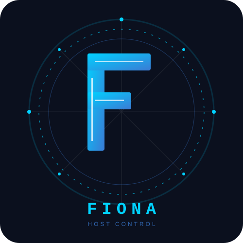

Local host-control documentation
Fiona
Fiona is a local host-control project inspired by JARVIS-style workstation control. It is the software base for local actions, encrypted communication, desktop awareness, data tools, LM Studio inference, and a simple 3D hologram viewer.
What Fiona Provides
QuikTieper
App launching, keyboard shortcuts, pointer control, and remote action execution.
CamComs
Encrypted messages, trusted sender storage, host receiver, and audit logging.
PhiConnect
Standalone encrypted computer-to-computer chat using CamComs primitives.
DataClient
Research mining, bounded deep research, MiniExcel, and table conversion tools.
SeeOnDesk
Desktop awareness for active app, active window, and session metadata.
EyeControl
Optional camera-based eye-controlled mouse tracker integration.
TerminalAssist
btop-inspired fAT terminal dashboard and Zellij workspace helper.
Vsee
3D point and edge wireframe viewer for early holography experiments.
Agent
LM Studio bridge for local OpenAI-compatible inference.
Main Commands
python3 -m fiona.cli edit
python3 -m fiona.cli run
python3 -m fiona.cli camcoms smoke-test
python3 -m fiona.cli phiconnect
python3 -m fiona.cli dataclient
python3 -m fiona.cli vsee
python3 -m fiona.cli seeondesk status
After editable installation, fiona ... can be used instead of python3 -m fiona.cli ....
Documentation Map
- Start with Getting Started.
- Install from Installation.
- Understand package layout in Architecture.
- Deep-dive into CLI Mechanics, GUI Mechanics, and System Workflows.
- Read each subsystem under Modules.
- Track implementation status in Current State, Roadmap, and Test Suites.